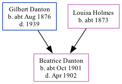

Beatrice Maud Danton cOct 1901 - 1902
[ Home ] | [ Calendar ] | [ Surnames Index ] | [ Family History ]The child of Gilbert Danton and Louisa Holmes, Beatrice Danton, the second cousin once-removed on the father's side of <a href="I1.html">Nigel Horne</a>, was born in Ramsgate, Kent, England <i>c.</i> Oct 1901<span class="citation">1,2,3</span> and baptized there at St Luke's Church on Oct 9, 1901.<p>She died in Apr 1902 in Thanet, Kent, England<span class="citation">3,4</span>.
Parents
- Gilbert Edmund was born c. Aug 1876
- Louisa Mary was born c. 1873
Citations
- England & Wales births 1837-2006 - Findmypast
- England & Wales, FreeBMD Birth Index, 1837-1915 Online publication - Provo, UT, USA: The Generations Network, Inc., 2006.Original data - General Register Office. England and Wales Civil Registration Indexes. London, England: General Register Office. © Crown copyright. Published by permission of the Cont
- England & Wales, FreeBMD Death Index: 1837-1915 Online publication - Provo, UT, USA: The Generations Network, Inc., 2006.Original data - General Register Office. England and Wales Civil Registration Indexes. London, England: General Register Office. © Crown copyright. Published by permission of the Cont
- England & Wales deaths 1837-2007 - Findmypast
Media
England & Wales births 1837-2006 - BMD/B/1901/4/AZ/000145/104
England Births & Baptisms 1538-1975 - R_884621702
England & Wales deaths 1837-2007 - BMD/D/1902/2/AZ/000087/005
Family Tree
Generated by Ged2Site. Last updated on Jul 20, 2025